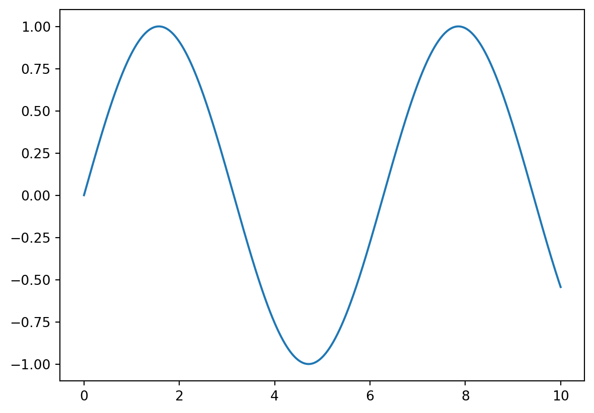

import random
random.randint(0, 100)7In previous tutorials, we have consistently used variables to store data and perform operations on it. This method may suffice within a given Python session, such as here in a Jupyter notebook or in a program.
But what happens, for example, if we want to retain the outputs of the calculations performed or transformed data once the session is over? We need to save these elements in a file, in a location where this data will persist over time for future use. In this tutorial, we will see how to read and write files with Python.
Before discussing file manipulation, we need to make a brief detour into the world of modules and packages (libraries).
So far, we have primarily used standard Python objects and instructions that did not require any third-party imports. In this tutorial and all the ones to follow, we will perform more complex operations (interacting with a file system, performing vector calculations, manipulating tabular data, etc.) that would be very costly, inefficient, and error-prone to code by hand using basic Python objects.
This is why we will use packages, which are toolboxes filled with functions and classes developed by others (often communally) that allow us to perform complex operations at a lower cost.
Let’s start with a few brief elements of terminology to navigate the Python ecosystem properly:
Python) containing a set of definitions (of classes, functions) and instructions that can be imported into a Python environment for use.For example, we will see in detail the use of numpy in the next part. numpy is a package that allows for scientific computation on multidimensional objects. To do this, numpy provides a vast number of functions and tools. Putting them all in a single module would be highly unreadable. Thus, numpy is structured into different modules that group functions performing similar operations: random number generation in the random module, linear algebra in the linalg module, etc.
To use the functions of a module and the various modules that constitute a package, we first need to import them.
The syntax is straightforward; let’s illustrate it with an example.
import random
random.randint(0, 100)7We imported the random module (entirely) from the standard Python library using the import statement. Then, we called the randint function contained in the random module, which returns a random number between a and b, its parameters.
We could also import only the randint function using the from module import function syntax. Then, specifying the module name is no longer necessary when calling the function.
from random import randint
randint(0, 100)1Note that once an import is performed, the imported module is available for the entire duration of the Python session. Therefore, there’s no need to import the module before each use of one of its functions; once at the beginning of the notebook or script is enough.
You sometimes see the syntax from module import * (* is called the wildcard), which imports all the functions of the module into memory. While this can save time, it is not a good practice:
A package is simply a collection of modules, structured hierarchically. The syntax for importing a package is the same as for importing a module.
For example, let’s see again how to use the randint function, but this time from the numpy package (which does the same thing).
import numpy
numpy.random.randint(0, 100)20We imported the numpy package, which allowed us to access the randint function via its random module. Again, we could import the function directly.
from numpy.random import randint
randint(0, 100)92In practice, the first syntax is preferable: it is always more readable to explicitly show where the function being called comes from. To reduce verbosity, it is common to give aliases to imported packages. Here are the three most common ones, which we will encounter very often in the tutorials of the next chapter on data manipulation.
import numpy as np
import pandas as pd
import matplotlib.pyplot as pltWe can then use these aliases to call modules and functions.
x = np.linspace(0, 10, 1000)
plt.plot(x, np.sin(x))
So far, we have been able to import various packages via the import statement without any issues. But how were they installed? We need to distinguish between two cases:
Python. This is the case for the random package used earlier, but there are many others;Python user community and must be installed to be used. This is the case for numpy and pandas. In our case, we did not have to install them because the environment provided for the training already contains all the necessary packages to run the different chapters.Let’s illustrate package installation with the emoji package, which allows for representing emojis in Python outputs. This package is not yet installed; trying to import it produces a ModuleNotFoundError.
import emojiTo install a package, the command is simple: pip install package_name. Without going into details, pip is a package manager installed with Python that is used via the command line (i.e., in a terminal). To send a command to the terminal from a Jupyter notebook, we add a ! at the beginning of the line.
!pip install emojiRequirement already satisfied: emoji in /opt/hostedtoolcache/Python/3.10.14/x64/lib/python3.10/site-packages (2.12.1)
Requirement already satisfied: typing-extensions>=4.7.0 in /opt/hostedtoolcache/Python/3.10.14/x64/lib/python3.10/site-packages (from emoji) (4.12.2)We can now import the package and use its functions.
import emoji
print(emoji.emojize('Python is :thumbs_up:'))Python is 👍pip is the standard package manager for Python. It allows installing, updating, and removing Python packages found in the Python Package Index (PyPI), a directory of packages for programming in Python. This directory contains a vast number of projects (about 500,000 at the time of writing this tutorial), from the most amateur to the most essential.
In general, it is always preferable, before starting to write an application “by hand,” to check if a package doing the same thing or almost already exists. A simple Google search—preferably in English—containing the keywords of what you are looking to do often ensures this.
To read and write files with Python, we first need to understand how they are represented on the local file system and how Python interacts with it.
The pathlib module
For this, we will repeatedly use the pathlib module and, in particular, the Path class. This module allows interacting with the file system in the form of objects, manipulating attributes and their methods. Don’t worry; we have already seen everything we need to know about this in the previous tutorial.
from pathlib import PathFile properties
A file has two properties:
For example, let’s look at the files in our current directory (by default, the folder where this notebook is located). The method to use is called cwd, for current working directory.
Path.cwd()PosixPath('/home/runner/work/formation-python-initiation/formation-python-initiation/source/manipulation/modules-files')The path of our current directory is contained in a PosixPath object, which simply means that pathlib understood that we were on a Unix-like environment (the SSP Cloud servers run on Linux). If you were running this notebook locally on a Windows computer, the object would be WindowsPath. Practically, this doesn’t change much for you, but it is quite important: file systems do not use the same conventions between different environments (e.g., the separators between folders in a path are not the same), but pathlib allows you to interact with these different systems in a harmonized way.
Now, let’s list all the files in our current directory. We use another method, glob, which will simply return all files whose name has a certain structure. For example, .glob('*.txt') will retrieve all files with the .txt extension, and .glob('test.*') will retrieve all files named test, regardless of their extension. Here, we retrieve all files using the wildcard * in both positions.
This method returns a somewhat special object (a generator). If you remember, we encountered the same case with the range function. Simply call the list function on it to display the results legibly.
Path.cwd().glob('*.*')<generator object Path.glob at 0x7fdc49963ed0>list(Path.cwd().glob('*.*'))[PosixPath('/home/runner/work/formation-python-initiation/formation-python-initiation/source/manipulation/modules-files/test.txt'),
PosixPath('/home/runner/work/formation-python-initiation/formation-python-initiation/source/manipulation/modules-files/output_script.txt'),
PosixPath('/home/runner/work/formation-python-initiation/formation-python-initiation/source/manipulation/modules-files/write_list.py'),
PosixPath('/home/runner/work/formation-python-initiation/formation-python-initiation/source/manipulation/modules-files/tutorial.quarto_ipynb'),
PosixPath('/home/runner/work/formation-python-initiation/formation-python-initiation/source/manipulation/modules-files/notes.txt'),
PosixPath('/home/runner/work/formation-python-initiation/formation-python-initiation/source/manipulation/modules-files/notes_clean.txt'),
PosixPath('/home/runner/work/formation-python-initiation/formation-python-initiation/source/manipulation/modules-files/tutorial.qmd'),
PosixPath('/home/runner/work/formation-python-initiation/formation-python-initiation/source/manipulation/modules-files/gamme.txt'),
PosixPath('/home/runner/work/formation-python-initiation/formation-python-initiation/source/manipulation/modules-files/normalisation.py')]We find our notebook, a file that contains the solutions to the tutorial exercises, and several text files that will serve as examples in the rest of the tutorial. For instance, if we take the notebook, we can clearly distinguish:
tutorial.ipynb/home/onyxia/work/Absolute paths and relative paths
There are two possible ways to specify the path of a file:
/ on Unix, C:\ on Windows, etc.). The paths returned above are therefore absolute.Python program. As soon as a path does not start from the root, pathlib will consider it relative.This distinction will prove quite important later when it comes to reading and writing files.
Forming paths
In practice, what interests us is being able to form our own paths—whether they are absolute or relative to the current directory—to specify where the files we want to read are located or where the files we want to write should be.
pathlib offers a very intuitive syntax for forming paths, very similar to the concatenation of strings we have already seen. Instead of a +, this time, we will use a / to concatenate the different parts of a path.
For example, let’s try to reconstruct the full path of this notebook. We can start by finding the path of the home directory, which is the standard folder where all the user’s files are located.
Path.home()PosixPath('/home/runner')We can then concatenate the different subfolders and the file name of the notebook to get the full path to it.
path_nb = Path.home() / 'work' / 'tutorial.ipynb'
path_nbPosixPath('/home/runner/work/tutorial.ipynb')We get exactly the same path as the one obtained by listing the files in the current directory.
More about pathlib
We have only seen a glimpse of the tools offered by the pathlib module to interact with the local file system. The official documentation presents these possibilities exhaustively. We will present other methods from this library in this tutorial and the following ones as the opportunity arises. For now, we know enough to read and write files on the file system.
In programming, we generally deal with two large families of files:
Python scripts ending in .py are examples of text files. These files can be read with any text editor.As you can imagine, these two types of files are handled with different tools. Moreover, due to the diversity of binary files, each of them requires particular handling. In a programming context, however, we mainly deal with code, which is textual data. So, we will focus only on writing and reading text files in this tutorial, but it is important to recognize binary data when you need to handle it.
Asking Python to open a file is like opening a connection between your Python environment and the file. As long as this connection is open, the file can be manipulated.
To open a file, we use the open function. For example, let’s open the gamme.txt file that has been placed in the current directory.
path_range = Path.cwd() / 'gamme.txt'
file_in = open(path_range, 'r')
file_in<_io.TextIOWrapper name='/home/runner/work/formation-python-initiation/formation-python-initiation/source/manipulation/modules-files/gamme.txt' mode='r' encoding='UTF-8'>The open function returns an object of type _io.TextIOWrapper, which specifies the encoding mode of the file and the opening mode.
Encoding and decoding are technical subjects that we will not cover in this tutorial. Let’s simply note that the default encoding mode is UTF-8, and there is rarely a good reason to choose another mode.
However, the opening mode is very important. There are three main modes:
r: read-only. The file can only be read, not modified. This is the default mode when no mode is specified.w: write. This mode allows writing to a file. Warning: if a file with the same name already exists, it will be automatically overwritten.a: appending. This mode only allows adding lines to the end of an existing file.Once the file is open, operations can be performed on it using methods attached to the object representing it. In the next section, we will see what the readlines method does.
file_in.readlines()['do\n', 're\n', 'mi\n', 'fa\n', 'sol\n', 'la\n', 'si']Once the manipulations are done, close the connection with the close method. It is no longer possible to manipulate the file.
file_in.close()In practice, it is easy to forget to close the connection to a file, which can create annoying errors. There is a syntax that avoids this problem by using a context manager that handles the entire connection for us.
with open(path_range, 'r') as file_in:
lines = file_in.readlines()
lines['do\n', 're\n', 'mi\n', 'fa\n', 'sol\n', 'la\n', 'si']This syntax is much more readable: thanks to the indentation, it is clear which operations are performed while the file is open, and the file is automatically closed once we return to the initial indentation level. We will always prefer to use this syntax if possible, as it is a good programming practice.
Once a file is open, we may want to read its content. There are different ways to do this. A simple and elegant method is to traverse the file using a loop, which is possible because the Python object representing the file is iterable.
with open(path_range, 'r') as file_in:
for line in file_in:
print(line)do
re
mi
fa
sol
la
siIn our example, we simply displayed the lines, but many things can be done with the data in the text file: storing it in a Python object, using it for calculations, keeping only the lines that meet a certain condition via an if statement, etc.
There are also built-in methods for reading the content of a file. The most basic is the read method, which returns the entire file as a (potentially very long) string.
with open(path_range, 'r') as file_in:
txt = file_in.read()
txt'do\nre\nmi\nfa\nsol\nla\nsi'This is rarely very useful: we generally prefer to retrieve individual lines from a file. The readlines method traverses the entire file and returns a list whose elements are the lines of the file, in order of appearance.
with open(path_range, 'r') as file_in:
l = file_in.readlines()
l['do\n', 're\n', 'mi\n', 'fa\n', 'sol\n', 'la\n', 'si']Note that each element of the list (except the last one) ends with the special character \n (“newline”) which simply marks the end of each line in a text file. It is the (hidden) presence of this same character at the end of each call to the print function that causes a line break every time a print is used.
Writing to a file is very simple; it is done using the write method. For example, let’s write the various elements contained in a list to a file, line by line.
ex = ["this", "is", "a", "very", "original", "example"]
with open("test.txt", "w") as file_out:
for elem in ex:
file_out.write(elem)Everything seems to have gone smoothly. We can check that our file was created correctly via the Jupyter file explorer (on the left) or via the ls command in the terminal.
!ls__pycache__ notes.txt test.txt write_list.py
gamme.txt notes_clean.txt tutorial.qmd
normalisation.py output_script.txt tutorial.quarto_ipynbIt is there. Let’s now verify that its content is what we wanted.
with open("test.txt", "r") as file_out:
print(file_out.read())thisisaveryoriginalexampleThe different elements of our list have merged into a single block of text! This is because, unlike the print function, for example, the write function does not automatically add the newline character. It must be added manually.
with open("test.txt", "w") as file_out:
for elem in ex:
file_out.write(elem + "\n")
with open("test.txt", "r") as file_out:
print(file_out.read())this
is
a
very
original
example
That’s much better.
A few additional remarks about writing to files:
\w opening mode for a file completely overwrites its content. When we rewrote our file with line breaks, we completely overwrote the old one.open function and not a Path object containing the full path to the file we wanted to create? This is because Python automatically interpreted it as a relative path (to our current directory) due to the absence of a root.str (string) to a file. If one of the elements in the list above had been of type int or float, for example, it would have needed to be converted via thestr() function before being written to the file. Otherwise, Python would have returned an error.
.py filesSo far in this tutorial, we have explored the use of packages/modules, whether from the standard Python library or developed by third parties. We have also addressed interacting with the local file system. Now, let’s discover how to combine these skills by writing and executing our own Python scripts and modules as .py files.
In a Jupyter notebook environment (like the one you are in), Python code is executed interactively, cell by cell. This is possible because a Python kernel runs in the background throughout the notebook session. However, outside of Jupyter, code is generally written and executed as scripts. A Python script is simply a text file with a .py extension containing a series of Python instructions that will be executed linearly by the Python interpreter.
The write_list.py file repeats a code cell seen earlier. Let’s display its content.
with open('write_list.py', 'r') as script:
print(script.read())ex = ["ceci", "est", "un", "exemple", "très", "original"]
with open("output_script.txt", "w") as file_out:
for elem in ex:
file_out.write(elem)
print("Succès !")
A Python script is executed in a terminal using the command python script_name.py. To execute it from a Jupyter notebook, we again add a ! at the beginning of the line.
!python write_list.pySuccès !The output_script.txt file has indeed been created locally (it may take a while or require refreshing for it to appear), and the expected message was printed in the console output.
Should we prefer using Jupyter notebooks, as in this training, or prefer execution via scripts? There is no definitive answer to this question:
In short, notebooks are very useful during the development phase, but scripts are preferred when it comes to automating processes or producing code intended to run in production.
As we have seen, a script is a .py file intended to be executed directly. It generally contains a complete workflow or an automated task. A module is also a .py file, but it contains definitions of functions and/or classes intended to be used by other scripts or modules. It is not intended to be executed alone but imported elsewhere. At the beginning of this tutorial, we used modules from packages written by others. Now let’s see how we can write our own modules and import them according to the same principles.
Let’s display the content of the normalisation.py file, which will serve as an example.
with open('normalisation.py', 'r') as module:
print(module.read())import numpy as np
def normalise(x):
"""Normalise un vecteur de valeurs à une moyenne de 0 et un écart-type de 1."""
return (x - np.mean(x)) / np.std(x)
if __name__ == "__main__":
vec = [2, 4, 6, 8, 10]
vec_norm = normalise(vec)
print(np.mean(vec), np.var(vec), np.mean(vec_norm), np.var(vec_norm))
The function contained in this module can be imported as we have seen in this tutorial. Note that the module itself must import the necessary packages/modules for the proper functioning of its functions (in this case, numpy).
To import a local module, use the import statement followed by the file name without the extension. All functions defined in the module can then be used via the module_name.function_name syntax.
import normalisation
x = [1, 2, 3, 4, 5]
x_norm = normalisation.normalise(x)
print(x_norm)[-1.41421356 -0.70710678 0. 0.70710678 1.41421356]As explained at the beginning of the chapter, we could also import the function directly to avoid recalling the module name containing it. This is particularly practical if this function is to be used multiple times in the same notebook/script.
from normalisation import normalise
x = [1, 2, 3, 4, 5]
x_norm = normalise(x)
print(x_norm)[-1.41421356 -0.70710678 0. 0.70710678 1.41421356]A crucial good practice is to prioritize code readability. In both import variants presented above, the code is readable: it is clear from which module the function used comes.
However, it is not uncommon to see the instruction from my_module import * in Python code, which imports all functions defined in the my_module.py file. This should be avoided whenever possible for two reasons:
To limit the length of the instruction line when importing multiple functions, you can adopt the following syntax:
from my_module import (
function1,
function2,
function3
)--------------------------------------------------------------------------- ModuleNotFoundError Traceback (most recent call last) Cell In[72], line 1 ----> 1 from my_module import ( 2 function1, 3 function2, 4 function3 5 ) ModuleNotFoundError: No module named 'my_module'
Finally, note that a .py file can serve both as a module and a script. To differentiate between the two usages, use the __name__ variable, which is defined by default by Python when using a .py file:
import my_file), the __name__ variable is set to the file name (e.g., my_file).python my_file.py), the __name__ variable is set to __main__.In the previous cell, the normalisation.py file was imported as a module. In this case, the __name__ variable is set to normalisation, and that’s why the code under the if condition was not executed. When the file is executed as a script, this code is executed.
!python normalisation.py6.0 8.0 0.0 0.9999999999999998It is therefore very common to see the condition if __name__ == "__main__" in Python scripts, distinguishing the usage as a module and the usage as a script.
from module import * syntax?pathlib library?Python differentiate between the two?with open(...) as ... syntax to open a file?.py file intended to be executed directly. It generally contains a complete workflow or an automated task. A module is also a .py file, but it contains definitions of functions and/or classes intended to be used by other scripts or modules. It is not intended to be executed alone but imported elsewhere.Exercise inspired by: python.sdv.univ-paris-diderot.fr
The text file notes.txt is in your current directory. It contains the scores obtained by 50 students in an exam. Problem: all the scores are written on a single line, with a space each time. Open this file and calculate the mean and standard deviation of the scores.
Hints:
split method that allows splitting text based on a given character.numpy package to calculate the required statistics.# Test your answer in this cellimport numpy as np
with open("notes.txt", "r") as file_in:
notes = file_in.read()
notes = notes.split()
notes_num = []
for n in notes:
notes_num.append(int(n))
print(np.mean(notes_num))
print(np.std(notes_num))Exercise inspired by: python.sdv.univ-paris-diderot.fr
The text file notes_clean.txt is in your current directory. It contains the scores obtained by 50 students in an exam. Unlike the previous exercise, the scores are correctly written: one score per line.
Write code that:
int in a list.notes_mentions.txt with each line containing the score, followed by a space, followed by the mention “passed” if the score is greater than or equal to 10, and “failed” otherwise.For example, the first three lines of this new file should be:
5 failed
5 failed
18 passed# Test your answer in this cellnotes = []
with open("notes_clean.txt", "r") as file_in:
for n in file_in:
notes.append(int(n))
with open("notes_mentions.txt", "w") as file_out:
for n in notes:
if n >= 10:
mention = "passed"
else:
mention = "failed"
file_out.write(str(n) + " " + mention + "\n")3 students did not submit their papers on time for the exam:
Each student will have a final score equal to the obtained score minus the number of late days. A score cannot be negative; it will be replaced by 0.
The necessary information is placed in a list in the following cell. Using a loop on this list, add (without completely rewriting the file!) the scores to the notes_clean.txt file (without the mention).
NB: if you accidentally overwrite the content of a file, you can find the clean files on the GitHub repository associated with the training.
supp = [(16, 3), (11, 1), (3, 5)]# Test your answer in this cellsupp = [(16, 3), (11, 1), (3, 5)]
with open("notes_clean.txt", "a") as file_out:
for elem in supp:
final_score = elem[0] - elem[1]
final_score = max(0, final_score)
file_out.write(str(final_score) + "\n")Write a program that performs the following operations:
.txt extension (the syntax was seen in the pathlib part).if pattern in string: ...) to check if the file contains the word “sol”. If so, print its absolute path in the console (only the path of the gamme.txt file should appear).# Test your answer in this cellfrom pathlib import Path
txt_files_paths = list(Path.cwd().glob('*.txt'))
for path in txt_files_paths:
with open(path, "r") as file_in:
content = file_in.read()
if "sol" in content:
print(path)